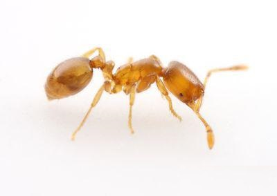

Desinsetização em Franca, SP
Atendimento para residências, condomínios, comércios e empresas em Franca e região.
Desinsetização em FrancaDesinsetização Profissional
Proteja sua casa, empresa, condomínio ou indústria contra baratas, formigas, aranhas, escorpiões, pulgas, carrapatos, moscas e outras pragas urbanas.
A Bioforte identifica a origem da infestação e define o tratamento adequado para cada ambiente.
Entenda o serviço
Desinsetização é o nome técnico do serviço popularmente conhecido como dedetização. O objetivo é controlar insetos e outros artrópodes que podem invadir residências, restaurantes, condomínios, comércios, hospitais, indústrias e outros ambientes.
Diferente de uma simples aplicação de produto, um serviço profissional de desinsetização começa pela identificação do problema.
A partir desse diagnóstico é definida a estratégia de controle mais adequada para o ambiente.
Como trabalhamos
Cada infestação possui características próprias. Por isso, o tratamento deve considerar a espécie encontrada, o nível de atividade, o tipo de imóvel e os locais de abrigo e circulação da praga.
A equipe identifica sinais de infestação, possíveis abrigos, fontes de alimento, umidade, frestas, acessos e outros fatores relacionados ao problema.
Baratas, formigas, escorpiões, aranhas, pulgas e outros organismos possuem hábitos diferentes. Identificar corretamente a espécie ajuda a definir onde e como o controle deve ser realizado.
Conforme o diagnóstico, o tratamento pode envolver métodos de controle, aplicações em pontos estratégicos, barreiras, orientações de manejo e medidas para reduzir condições favoráveis à infestação.
A aplicação é realizada por profissionais qualificados, utilizando produtos registrados para uso profissional e seguindo os procedimentos definidos para o ambiente.
Depois do atendimento, o cliente recebe as orientações necessárias sobre cuidados, reentrada no ambiente e prevenção.
Quando a situação exige acompanhamento contínuo, principalmente em empresas, indústrias, restaurantes e condomínios, o serviço pode fazer parte de um programa de Controle Integrado de Pragas .
Pragas atendidas
A Bioforte possui soluções específicas para diferentes espécies de pragas urbanas.

Conhecida popularmente como barata de esgoto, costuma utilizar redes de esgoto, ralos, tubulações e áreas úmidas como abrigo e acesso aos imóveis.
Controle de barata americana
Pequena e de rápida reprodução, é frequentemente encontrada em cozinhas, restaurantes, áreas de manipulação de alimentos e ambientes com disponibilidade de alimento e abrigo.
Controle de barata germânica
Espécie pequena que pode formar trilhas em cozinhas e áreas de preparo de alimentos, exigindo identificação e pontos de tratamento específicos.
Controle de formiga fantasma
Conhecida pelo corte de folhas, pode causar danos em jardins e áreas externas. O controle considera o formigueiro e as condições do entorno.
Controle de formiga saúva
A presença frequente de escorpiões exige avaliação dos possíveis acessos, abrigos e condições existentes no entorno do imóvel.
Controle de escorpiões
Causa preocupação quando encontrada com frequência. A avaliação identifica pontos de abrigo e ajuda a reduzir condições favoráveis.
Controle de aranha armadeira
Podem infestar residências e ambientes com pets. O tratamento considera pisos, frestas e locais de desenvolvimento das fases imaturas.
Controle de pulgas
Frequentes em quintais, canis e áreas de circulação de pets, exigem tratamento do ambiente além do controle veterinário dos animais.
Controle de carrapatos
São atraídas por resíduos orgânicos e podem representar risco sanitário em cozinhas e estabelecimentos comerciais.
Controle de mosca domésticaSinais de alerta
Alguns sinais indicam que o ambiente merece uma avaliação profissional.
Encontrar apenas um indivíduo nem sempre permite determinar o tamanho de uma infestação. A inspeção ajuda a identificar a origem do problema e definir o tratamento mais apropriado.
Para sua casa
Dentro de casas e apartamentos, pragas podem encontrar alimento, água e abrigo em cozinhas, banheiros, áreas de serviço, jardins, caixas de gordura, ralos, forros e outros pontos pouco acessíveis.
O objetivo da desinsetização residencial é controlar a infestação considerando as características do imóvel e as pessoas e animais que utilizam o ambiente.
A equipe informa previamente todos os cuidados necessários antes e depois do serviço.
Solicitar avaliação residencialPara o seu negócio
Empresas possuem necessidades diferentes das residências.
Restaurantes, supermercados, condomínios, hospitais, clínicas, indústrias, depósitos e estabelecimentos comerciais podem precisar de inspeções e controles programados para reduzir condições que favorecem pragas.
Nesses ambientes, a Bioforte pode integrar a desinsetização a um programa de Controle Integrado de Pragas , combinando prevenção, monitoramento, ações corretivas e acompanhamento.
Antecipe o problema
Não é necessário esperar uma infestação atingir grandes proporções para procurar uma empresa de controle de pragas.
O intervalo entre os serviços deve ser definido conforme o ambiente, histórico de ocorrência e nível de risco.
Tranquilidade
A segurança depende da correta escolha do método, produto, local de aplicação e orientação ao cliente.
A Bioforte utiliza produtos registrados para uso profissional e realiza a aplicação em pontos definidos conforme o problema identificado.
Os cuidados necessários podem variar de acordo com o tratamento e com as características do ambiente.
Antes do serviço, nossa equipe informa orientações específicas sobre pessoas, crianças, animais domésticos, alimentos, utensílios e tempo de reentrada quando aplicável.
Nossa autoridade
Controle de pragas não deve ser tratado apenas como aplicação de produto.
A Bioforte trabalha a partir da análise do ambiente e da identificação do problema para definir a estratégia adequada para cada situação.
Atendimento regional
Atendimento para residências, condomínios, comércios e empresas em Franca e região.
Desinsetização em FrancaServiços profissionais de controle de pragas para clientes residenciais e empresariais em Ribeirão Preto e região.
Desinsetização em Ribeirão PretoAtendimento especializado para imóveis residenciais, comerciais e empresariais em Uberaba e região.
Desinsetização em UberabaSoluções em controle de pragas para residências, empresas e outros ambientes em Guarapuava e região.
Desinsetização em GuarapuavaDúvidas frequentes
No uso cotidiano, os dois termos costumam se referir ao controle de insetos e outras pragas urbanas. Desinsetização é o termo técnico utilizado para esse tipo de serviço, enquanto dedetização é a expressão popularmente utilizada pelos consumidores.
Depende do método, produto utilizado e características do ambiente. A Bioforte informa todas as orientações necessárias antes da realização do serviço.
As recomendações variam conforme o tratamento realizado. Informe previamente à equipe sobre crianças, idosos, animais domésticos ou qualquer condição específica existente no imóvel para receber as orientações adequadas.
O tempo de execução depende do tamanho do imóvel, da praga encontrada, do nível de infestação e do tratamento necessário.
Não existe um único período válido para todas as situações. Tipo de praga, ambiente, condições externas, higienização, acessos e outras características interferem na possibilidade de novas ocorrências.
A frequência deve ser definida de acordo com o tipo de imóvel, histórico de infestação e nível de risco. Empresas e estabelecimentos com maior exposição a pragas podem precisar de programas preventivos e acompanhamento periódico.
Um único indivíduo não permite determinar com certeza o tamanho de uma infestação. Porém, ocorrências frequentes, principalmente durante o dia ou em diferentes pontos do imóvel, justificam uma avaliação profissional.
Sim. A Bioforte atende residências, condomínios, comércios e indústrias e também trabalha com programas de Controle Integrado de Pragas.
O tratamento pode ser utilizado no controle de diferentes pragas, incluindo baratas, formigas, aranhas, escorpiões, pulgas, carrapatos e moscas. A estratégia utilizada depende da espécie identificada e das características do ambiente.
Entre em contato com a Bioforte e informe sua cidade, o tipo de imóvel e a praga observada. A equipe poderá orientar sobre os próximos passos e elaborar uma proposta adequada ao atendimento.
Encontrou baratas, formigas, aranhas, escorpiões, pulgas, carrapatos ou outros sinais de infestação?
A Bioforte pode avaliar o ambiente e indicar a estratégia de controle adequada para sua residência ou empresa.
Fale no WhatsAppFranca • Ribeirão Preto • Uberaba • Guarapuava
Continue explorando

Conjunto de ações preventivas e corretivas para impedir a atração e a proliferação de pragas urbanas.
Conhecer o serviço
Serviço utilizado para erradicação e prevenção de roedores, como camundongos, ratazanas e rato de telhado.
Conhecer o serviço
Para não correr o risco de uma infestação atingir proporções alarmantes, é importante realizar a descupinização.
Conhecer o serviço
Os pombos, apesar da aparência inofensiva, são causadores de danos e riscos sanitários em estruturas.
Conhecer o serviço
Equipe treinada e qualificada para executar todas as etapas de desinfecção e limpeza de caixa d'água.
Conhecer o serviço